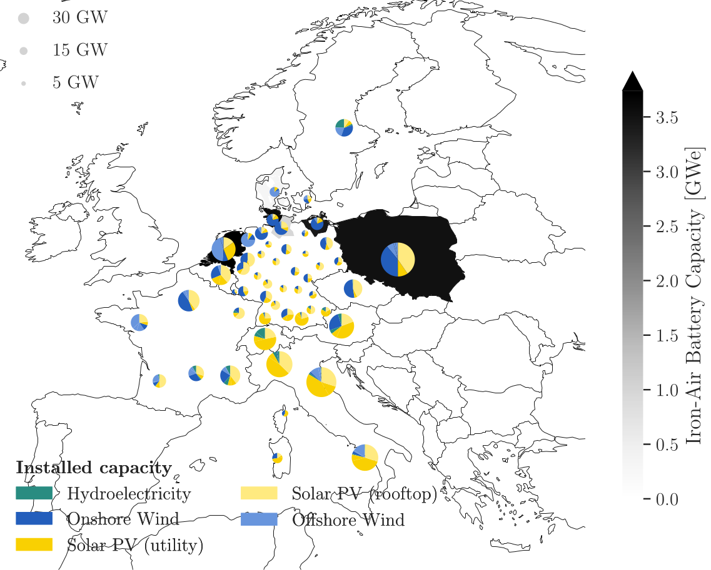

Introduction#


This repository is a soft-fork of OET/PyPSA-Eur and contains the entire project The Role of Energy Storage in Germany supported by Open Energy Transition (OET)*, including code and visualization. The philosophy behind this repository is that no intermediary results are included, but all results are computed from raw data and code.
This repository is maintained using OET’s soft-fork strategy. OET’s primary aim is to contribute as much as possible to the open source (OS) upstream repositories. For long-term changes that cannot be directly merged upstream, the strategy organizes and maintains OET forks, ensuring they remain up-to-date and compatible with upstream, while also supporting future contributions back to the OS repositories.
The Role of Energy Storage in Germany#
Energy storage technologies hold significant promise for reducing carbon emissions. While short-duration storage is popular today, the system benefits for long duration storage are rather hidden and require more effort to receive policy attention. This project aims to reveal the hidden benefits of multi-day energy storage through the analysis of energy system models.
The primary objectives are to develop a policy relevant validated energy system model with a focus on Germany, and integrate various representations of short to long-duration energy storage into the model. Then, optimization runs are conducted to explore various scenarios to inform policy-makers about the benefits of various types of energy storage. The project will culminate in a detailed report and the full model open-source code to support global research efforts. OET, an international non-profit organization specializing in open energy modeling software development and support, will bring its expertise to this project. The organization has a proven track record in promoting transparent, data-driven decision-making in energy policy and planning, with its software products (including PyPSA-Eur and PyPSA-Earth) used in more than 50 research and industry-related projects.
All results will be based on open-source software and fully reproducible. If implemented successfully for Germany, the methods can be replicated easily within the same model framework all-around the world using, among others, PyPSA-Eur or PyPSA-Earth.
For further readings of PyPSA and PyPSA-Eur, check out:
Scope of the Model#

To run multiple scenarios with a reasonable amount of computational power, we limit the scope of the model to the following:
Spatial Scope:
The model includes Germany, along with its neighboring countries and Italy, making up 12 out of the 34 countries in PyPSA-Eur.
The spatial resolution are 52 nodes in total, with 31 nodes dedicated to Germany, making the results for Germany more accurate than those for other modeled countries.
Temporal Scope:
The analysis targets the near-term application of iron-air storage technologies, focusing on the year 2035, while PyPSA-Eur models the period from 2020 to 2050 in 5-year intervals.
The temporal resolution is based on 4380 hours, instead of the full 8760 hours.
Sectoral Scope:
The model includes only sectors with energy storage technologies, specifically the power, heating, and transport sectors, excluding the industrial sector.
To view all the changes in detail, check out:
PyPSA-Eur: A Sector-Coupled Open Optimisation Model of the European Energy System#
PyPSA-Eur is an open model dataset of the European energy system at the transmission network level that covers the full ENTSO-E area. The model is suitable both for operational studies and generation and transmission expansion planning studies. The continental scope and highly resolved spatial scale enables a proper description of the long-range smoothing effects for renewable power generation and their varying resource availability.
The original PyPSA-Eur model is described in the documentation and in the paperPyPSA-Eur: An Open Optimisation Model of the European Transmission System, 2018, arXiv:1806.01613.

The dataset consists of:
A grid model based on a modified GridKit extraction of the ENTSO-E Transmission System Map. The grid model contains 7072 lines (alternating current lines at and above 220kV voltage level and all high voltage direct current lines) and 3803 substations.
The open power plant database powerplantmatching.
Electrical demand time series from the OPSD project.
Renewable time series based on ERA5 and SARAH, assembled using the atlite tool.
Geographical potentials for wind and solar generators based on land use (CORINE) and excluding nature reserves (Natura2000) are computed with the atlite library.
A sector-coupled extension adds demand and supply for the following sectors: transport, space and water heating, biomass, industry and industrial feedstocks, agriculture, forestry and fishing. This completes the energy system and includes all greenhouse gas emitters except waste management and land use.
Each of these sectors is built up on the transmission network nodes from PyPSA-Eur:
Repository structure#
benchmarks: will storesnakemakebenchmarks (does not exist initially)config: configurations used in the studycutouts: will store raw weather data cutouts fromatlite(does not exist initially)data: includes input data that is not produced by anysnakemakeruledoc: includes all files necessary to build thereadthedocsdocumentation of PyPSA-Eurdocumentation: includes all files necessary to build thejupyter bookdocumentation of Form Energy Storage version of PyPSA-Eurenvs: includes all themambaenvironment specifications to run the workflowlogs: will store log files (does not exist initially)notebooks: includes all thenotebooksused for ad-hoc analysis
rules: includes all thesnakemakerules loaded in theSnakefileresources: will store intermediate results of the workflow which can be picked up again by subsequent rules (does not exist initially)results: will store the solved PyPSA network data, summary files and plots (does not exist initially)scripts: includes all the Python scripts executed by thesnakemakerules to build the model